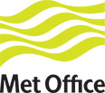

<div class="site-wrapper customer metoffice">

  <div id="maia-main">
   <div class="maia-cols">
      <div class="maia-col-3 sidebar">
      
      
      <div class="customer-img-container">
      
      </div>
      
      
      
      
       <div class="side-section at-a-glance">
         <h3>At a Glance</h3>
         <b>What they wanted to do</b><ul><li><span> Build a secure, cloud-based website that allows weather enthusiasts and schools to submit and share weather observations and records</span></li><li><span> Allow for automatic scalability so no manual intervention is required to handle usage spikes</span></li><li><span> Accommodate future growth in data and number of users </span></li></ul><b>What they did </b><ul><li><span> Designed, developed and deployed the site in only five months by using Google App Engine</span></li><li><span> Used Google Maps and Google APIs to create a robust, user-friendly site</span></li><li><span> Installed an intuitive, web-based dashboard to monitor site performance easily</span></li></ul><b>What they accomplished</b><ul><li><span> Created a way to accept a growing number of reports without having to consider additional hardware</span></li><li><span> Collected more than 25 million weather observations to date from users around the world </span></li></ul>
       </div>
      
      
      
      
       <div class="side-section about">
         <h3></h3>
         
       </div>
      
      
      
      
      
      
      
       <div class="side-section product">
         <h3>About Google App Engine</h3>
         Google App Engine enables businesses to build and host web apps on the same systems that power Google applications. It offers fast development and deployment, effortless scalability and simple administration, with no need to worry about hardware, patches or backups. For more information visit <a href="www.google.com/enterprise/appengine/">www.google.com/enterprise/appengine/</a>
       </div>
      
      
      
      
       <div class="side-section product">
         <h3></h3>
         
       </div>
      
      
      
      </div>

      <div class="maia-col-9 customer-container">
        <h1 class="headline">U.K.’s National Weather Service tracks weather in the cloud with Google App Engine</h1>
        
        <p> The Met Office, the United Kingdom’s national weather forecasting service, has provided weather reports to the United Kingdom and the rest of the world for the past 150 years. It recently expanded its capabilities using Google App Engine, which powers a cloud-based website (wow.metoffice.gov.uk) that has collected tens of millions of weather reports from users around the world. The system scales automatically to accept new reports, saving the Met Office from having to purchase additional servers or manage complicated configuration changes. </p><h2> Challenge </h2><p> The Met Office wanted a central, online platform where amateur weather watchers could submit temperature readings, rain and snow reports, and other observations. It also wanted to support the U.K. Department of Education’s goal of allowing schools to easily share and compare weather- related data. They considered in-house development, but wanted the scalability that a cloud-based service allows. </p><p> “We needed a scalable solution that would automatically provision additional capacity during significant weather events and other high- demand periods,” says Adrian Shand, an IT Project Manager at the Met Office. “This way we wouldn’t have to tie up additional servers that would otherwise be underutilized much of the time.” </p><p> Though Shand and his colleagues knew a cloud-based solution was the answer, they needed to choose the right service so they could build a reliable, easy-to-manage website. </p><h2> Solution </h2><p> Following a competitive bidding process, the Met Office hired PA Consulting Group, a London-based management and IT consultancy, to help build a cloud-based website that would gather weather data from users worldwide. </p><h2> </h2><div class='quote'><p> “Google App Engine has allowed us to benefit from instant scalability. We haven’t had anything to worry about as the site grows.”</p><p class="attribution"><span>Adrian Shand</span>IT Project Manager, MetOffice </p></div><h2> </h2><p> After evaluating several cloud-based services, the groups chose Google App Engine because it can scale automatically, which saves the Met Office from having to monitor the system for usage spikes and provision additional capacity on the fly. In addition, Google App Engine supported Java, which developers at PA Consulting Group and the Met Office both had extensive experience using. A team of seven PA Consulting developers needed only five months to launch the website. They used several Google tools to make it more attractive and user-friendly, including: <ul><li><span> Google Maps to display weather conditions </span></li><li><span> The Geolocation Application Programming Interface (API) to pinpoint users’ locations </span></li><li><span> Google’s low-level datastore API to help weather data load quickly </span></li></ul><p> Because Google App Engine allows developers to deploy multiple versions of code in parallel, the team is able to test new features without having to take down the site. </p><p> “If the website is unavailable for even just a few minutes, we lose a lot of observations,” says PA Consulting Group developer Geoff Willingham. “Because of that, downtime is really a problem for us.” </p><p> The site, which launched in June 2011, requires minimal maintenance. An intuitive web-based dashboard allows Met Office staff to easily monitor site performance and view response time, error rates and other data. </p><p> “We’re able to get on-the-spot information about how things are going,” Shand says. “We’ve also begun using Google Analytics, which adds another perspective. We’re very pleased that we can see what’s happening in near real-time terms.” </p><h2> Results </h2><p> Since the website launched, users in 136 countries have submitted more than 25 million weather reports. The site’s popularity continues to grow, and the Met Office hopes to eventually cover the globe with a real-time map of worldwide weather observations. </p><p> “The ability to share weather-related information has gone over very well,” Shand says. “A lot of people take great pride in collecting this data and have responded very positively to the ease with which they can share their observations.” </p><p> The service has shown that it can easily handle usage spikes, giving Shand and his team confidence that the technology will continue to meet their needs as their user base expands. </p><p> “Using Google App Engine has allowed us to benefit from instant scalability and easier site development,” Shand says. “Thanks to the scalability, we haven’t had anything to worry about as the site grows.” </p>
      </div>
    </div>  
  </div>
</div>
